Magick Notation
Magick notation is a notation method designed to quickly and easily communicate player actions in the Magicka games. It has no regard for whether you play on keyboard, controller, or use the default input mapping. It was created with the intent of being precise, succinct, and, easy to learn.
While it is versatile enough to convey complex actions, even a superficial understanding is enough to begin making use of Magick notation. For instance, instead of saying "self cast ice ice ice ice ice", you could just say S:iiiii or even S:5i.
Here's a quick 25 second video showing that even complex actions can be expressed succinctly.
In just a few moments you'll gain much better understanding of how exactly this notation works.
Syntax
The syntax is divided into up to four general parts: flags, state, cast, and elements. Here's a quick overview before going into each part in more depth.
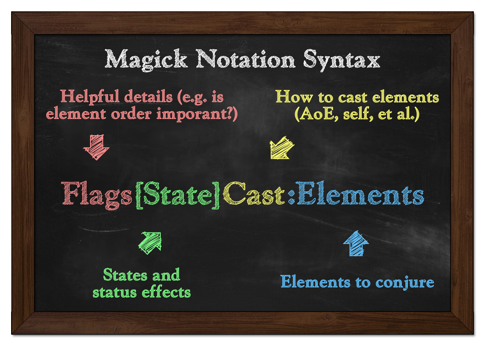
All four parts are optional. Sometimes you may only need to convey one or two things. You can use whichever parts you need at any given time and discard the rest.
I'll go one by one and break down how they can be used, but I'll be covering the parts in reverse order since that is probably the easiest way to learn the notation (as opposed to simply reading it).
Elements
As you've probably guessed, this part denotes which elements are conjured. Every element is represented by a single character. To notate elements, start with a colon (:) and follow it with the representative characters. (We'll get to those characters in a moment.)
The reason for using : is to separate the elements from the rest of the notation. It also makes it clear that it is a notation. For example, look at this: feed. You might be trying to notate "fire, earth, earth, death" or maybe you're just hungry, who knows! No wizard wants to be both hungry and confused; that's just bad form.
Primary Elements
Primary elements are the ones that can be conjured directly. (i.e. No mixing required!)
| Icon | Name | Notation |
|---|---|---|
| Cold | c |
|
| Death | d |
|
| Earth | e |
|
| Fire | f |
|
| Life | l |
|
| 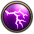 | Lightning | t |
| Shield | s |
|
| Water | w |
Simply put, each element goes by the first letter of its name, with the exception of lighting. It goes by "t", which can be thought of as "thunder" instead.
Secondary Elements
Secondary elements are formed by conjuring multiple primary elements.
| Icon | Name | Notation | Description |
|---|---|---|---|
| Ice | i |
Formed by conjuring water (w) and cold (c) |
|
| Poison | p |
Formed by conjuring water (w) and death (d) |
|
| Steam | m |
Formed by conjuring water (w) and fire (f) |
As before, each element goes by the first letter of its name, except for steam, which goes by its last letter, "m". Fun fact: it's the only element that has an "m" in its name. (I am not responsible for what you choose to do with that information.)
Alternatively, secondary elements can be notated by the primary elements they are comprised of (e.g. :wcwdwf instead of :ipm).
Pseudo Elements
These are not actual elements, but rather used in lieu of elements for communicative benefit.
| Icon | Name | Notation | Description |
|---|---|---|---|
| Unspecified element | x |
This may be used in contexts where any element is permitted, or the exact element is unknown or doesn't matter. It's a wild card, basically. |
Element Operators
This is the most advanced part of Magick notation. If this is your introduction to Magick notation, feel free to skip this part for now. (...Or don't!)
Element operators are just symbols used to make element notations a less monotonous. They can reduce repetitiveness and increase versatility and readability for those that are familiar with the syntax.
| Name | Syntax | Description | Example |
|---|---|---|---|
| Group | (, ) |
Groups elements together, which can be useful for applying certain modifiers to multiple elements at once. It can also be used to merely improve readability. Groups can be within other groups. | :(mpi) |
| Optional | ? |
The preceding element (or group) is optional. | :c? |
| Open repeat | + |
Input the preceding element (or group... you get the idea, right?). Afterwards, the element may be repeated zero or more times. | :d+ |
| Closed repeat | [number] or [range] |
Input the following element as many times as specified. If a range is given (e.g. 1-3), input the element any number of times within that range. |
:2-3w |
| Or | | |
Choose to input one of the elements on either side of this operator. You can chain together any number of options. | :i|e|t |
Sometimes even when it is technically unnecessary to group elements, it can be easier to read, so feel free to group elements if you think it helps the reader. It can also be used to convey things like simultaneous button presses, if you want to use it that way.
While not necessary, it is generally recommended that options (elements coupled with |) be grouped if other elements are not part of the choice. Both :se|i and :s(e|i) mean the same thing, but the latter is a little easier to read than the former.
Cast
If you've conjured some elements, naturally you're going to want to cast them, right? Like with elements, each cast type is represented by a single letter. It's pretty straight forward (pun intended). Cast notation precedes element notation.
| Image | Name | Notation | Description |
|---|---|---|---|
| 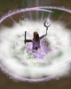 | Area | A |
Cast elements as an area spell. |
| 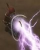 | Forward | F |
Cast elements as a forward spell, such as with a beam or throw. |
| 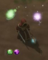 | No cast | X |
Elements are conjured but not cast. This is the default. If a notation does not specify a cast type, regard it as having this one. Must not be used with other cast types. |
| Weapon | W |
Use weapon. If elements are conjured (W:x), the weapon will become enchanted. If no elements are conjured (W:), the weapon will be used for an attack. |
|
| 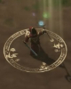 | Magick | M |
Cast elements as a Magick (e.g. Haste, Teleport, et al.). The strict (!) flag is automatically assumed and unnecessary to include. |
| 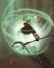 | Self | S |
Cast elements, applying them to one's self. |
Multiple cast types may be specified. Specifying multiple cast types denotes a choice deferred to the player. So, AS:se means you could either area (A) or self (S) cast :se. When specifying multiple cast types, the order doesn't matter.
You may have noticed that cast types are represented by uppercase letters while elements are represented by lowercase letters. This isn't strictly necessary to do, but it is recommended for the sake of readability. After all, this whole thing is about fast yet clear communication.
Tip: If you want to refer to a cast type without elements, you could still use an empty element notation with it like this A:. It's a good way to let the reader know you are using a notation and aren't just saying a letter randomly.
State
Your state refers to things such as status effects (but not only status effects). Sometimes your state is a determining factor for whether or not you should do something. You know, "Throw some water on yourself... but only if you're burning." That sort of thing.
The state is defined within a pair of brackets ([, ]). This makes it clear that they are states and not cast types. States can be denoted inclusively (meaning the state should be applied to the player before following the rest of the notation) or exclusively (meaning the state should not already be applied to the player).
| Image | Name | Notation (Include) | Notation (Exclude) | Description |
|---|---|---|---|---|
| Burning | B |
-B |
The player does (not) have the burning status effect. | |
| Chilled | C |
-C |
The player does (not) have the chilled status effect. | |
| Dispelled | D |
-D |
The player is (not) in a dispelled state. The player must be neutral in all regards, exactly as they would be if influenced by the Dispel Magick. Must not be used with other state types. * | |
| Frozen | F |
-F |
The player does (not) have the frozen status effect. | |
| Neutral | N |
-N |
The player is (not) in a neutral state. Unlike the dispelled state, this state refers only to a wizard's status effects. May be used with S. * |
|
 |
Poisoned | P |
-P |
The player does (not) have the poisoned status effect. |
| 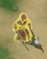 | Shielded | S |
-S |
The player is (not) wearing a shield, ward, or armor. |
| Wet | W |
-W |
The player does (not) have the wet status effect. |
Just like cast types, multiple states may be represented (and as before, the order doesn't matter). However, unlike cast types, multiple states do not denote a choice. They occur simultaneously.
Keep in mind that the negative sign (-) only applies to the one state immediately following it. So, [-CW] means you are not chilled but are wet. To convey that you are neither chilled nor wet, use [-C-W]. Here's a fun one you can do if you grow tired of being corporeal: [-SW]X:t+.
Flags
Flags are just symbols that say something about how the rest of the notation should be regarded. There's not much to them.
| Image | Name | Symbol | Description |
|---|---|---|---|
| 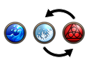 | Loose | ~ |
Denotes that elements may be conjured in any order. You likely will never need to use this flag, as this is the default, but it's available if it ever needs to be explicitly stated. |
| 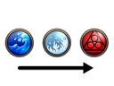 | Strict | ! |
Denotes that elements should be conjured in the exact order that they are notated. This flag is automatically assumed with the Magick (M) cast type. |
Examples
Let's conclude by going through a few examples, combining everything we've been over. Some of these examples can be found in the video I showed in the beginning. Also, remember, many spells can be notated more than one way. If you thought of a way to notate a spell that wasn't exactly how I did it, you might be correct as well.
| # | Plain English | Notation | Description |
|---|---|---|---|
| 1. | Attack with weapon | W: |
If the weapon was already enchanted, this would trigger the effect. |
| 2. | Conjure any element but do not cast it | X:x |
You could also notate it like this :x. |
| 3. | While wet, self cast fire | [W]S:f |
It's one way to dry off! |
| 4. | While shielded, Magick cast 4 death and 1 lighting | [S]M:4dt |
This is the Magick Sacrifice done from a shielded state. |
| 5. | Conjure anything or nothing at all | :x?+ |
x means any element. ? means that element is optional. + means to repeat x? any number of times. This is basically how to say "do whatever you want" in Magick notation. |
| 6. | Area, forward, or weapon cast shield and death (or life) | AFW:s(d|l) |
These are the minimum requirements for creating any set of mines. |
| 7. | Weapon cast shield, poison, steam, lightning, and death | !W:wwsdftd |
The strict flag here is particularly for controller players, as this specific order is a fast way to achieve this spell on controller. |
| 8. | Forward cast life, life, water, water, shield | F:2(lw)s |
The 2is placed before the group (lw), which means the entire group is input twice, making it equivalent to lwlw. |
| 9. | While wet and shielded, conjure at least 1 lightning element | [WS]:t+ |
Hopefully that shield was S:s(3-4t)?. |
| 10. | While not wet and shielded, weapon cast 1-2 ice, another ice or cold (or neither), death, and lightning | [-WS]W:1-2i(i|c)?dt |
This notation demonstrates the flexibility that can be used to include many variants of similar spells. There are 5 different possible variants that all adhere to the given specifications: :idt, :icdt, :iidt, :iicdt, and :iiidt.
|
As you can see, some notations probably wouldn't be used in casual conversation, but not all notations are necessarily meant to be used that way. Some may be useful to write down and refer back to later.
Magicks
Just for good measure, I'll include Magicks as well.
Magicka 2
| Image | Name | Notation |
|---|---|---|
| Abuse-a-Scroll | M:ftl |
|
| Concussion | M:wsww |
|
| Dispel | M:ds |
|
| 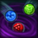 | Disruptor | M:des |
| Dragon Strike | M:ffdff |
|
| Emergency Teleport | M:tdt |
|
| Furious Fowl | M:dede |
|
| Guardian | M:llts |
|
| 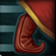 | Haste | M:tdf |
| Higherland Breeze | M:4i |
|
| 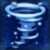 | Ice Tornado | M:iiecc |
| Push | M:ws |
|
| Revive | M:lt |
|
| Sacrifice | M:4dt |
|
| 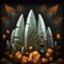 | Spike Quake | M:ddedd |
| Summon Living Dead People | M:iedc |
|
| Teleport | M:tdd |
|
| Thunderbolt | M:mtdt |
|
| Thunderhead | M:ffdtt |